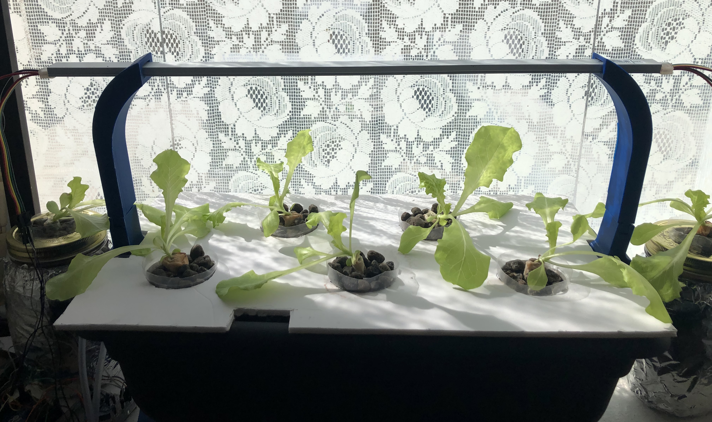

What is Deep Water Culture (DWC)?
Deep Water Culture is one among many types of hydroponics system that exist. It is by far one of the easiest and cheapest system to set up (which is good for me since I had no experience in farming with hydroponics in general).
Deep Water Culture is a method of hydroponics farming in which the root of plant is submerged deeply (hence the word 'Deep') in a reservoir filled with nutrient solution. As can be seen in the figure above, the system requires an air stone, which will pump oxygen into the reservoir. This is integral as the means to provide enough oxygen to the plant. Plus, the oxygen allows the plant to uptake the maximum amount of nutrition, resulting in acceelerated, prolific plant growth.
Because of this reason, Deep Water Culture is the method chosen for this pilot project (and perhaps for the whole project) due to its ease of set up which enables me to focus on doing the important thing with respect to the goal of this research project (such as implementing IoT into the system) rather than busy getting the hydroponics system to properly work (if using different method).
My Hydroponics System
Type of Plant: Lettuce
Type of Hydroponics System: Deep Water Culture (DWC)
Shown above is the completed deep water culture hydroponics system (as of 8th October 2022).
- A long rectangular planter pot is used as the base of the system.
- At the bottom left of the picture, there are two tubes indicating two air stones are used in this system.
- The nutrient solution is attained by combining tap water with nutrient called "Xpert Nutrients Master Grow Growth Feritlizer" before adding pH down solution to bring the pH to ~6 (since tap water has a pH value of ~7.5)
- Plastic cup is used as the pot / net cup for the plant. Solder is used to create holes on the plastic cup to allow roots of the plant to escape the cup and enter the nutrient solution
- Expanded clay pellet and paper towels are used as the growing medium
- Adafruit DotStar LED is used as the grow light as it has the ability to tune into any RGB color which can be really handy for experimentation.
Main Process Involved
Stated below are the steps that I followed throughout the lifecycle of a hydroponics system:
- Seed Germination
- Propagation
- Controlled Variable and Plant Monitoring
- Nutrient Solution Replacement
This is the phase at which a dormant seed starts to sprout (producing its first leaves) / being alive. In this pilot project, the lettuce seedling is germinated by placing the seeds on moistened cotton ball. The moistened paper towel is then placed in a closed container which acts as a humidity dome to provide a nice humid environment for the seedlings to germinate. It takes approximately 7 days for the lettuce seeds to sprout.
Once the size of the plant is approximately 2-3 inches and the root system starts to develop (to the point it penetrates the cotton ball), the lettuce is ready to be put into the hydroponics system. Plastic cup is used as the net pot, while the cotton ball along with expanded clay pellet are used as the growing media for the lettuce.
The amount of nutrient in nutrient solution and the morphology (structure) of the plant should be monitored regularly to ensure the plant to always received its needs. This is the area where automation could really benefit the grower as the monitoring process itself is an iterative process that could be easily done by a system/machine. In fact, this is the central idea behind this research project.
The nutrient solution should be replaced every 1-2 weeks. This is because as the plant mature, the root system will develop and absorb more nutrient which causes the nutrient level in nutrient solution to reduce. If the nutrient solution is not replaced, this can put pressure on the plant as it does not received the amount nutrient it should be getting.